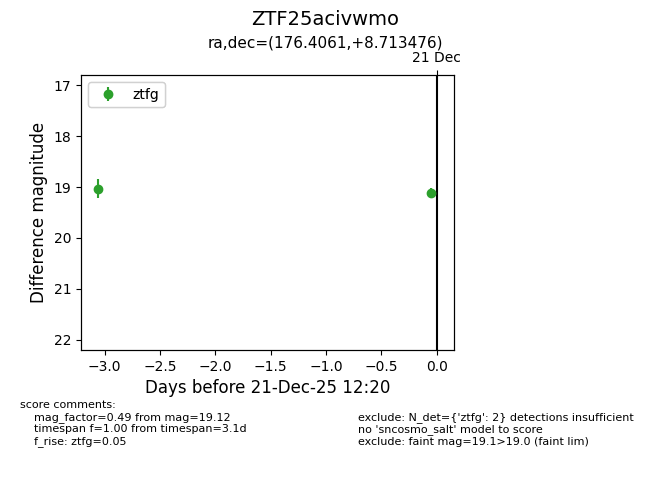
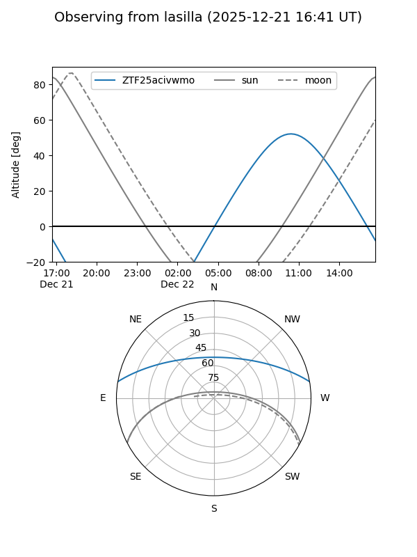
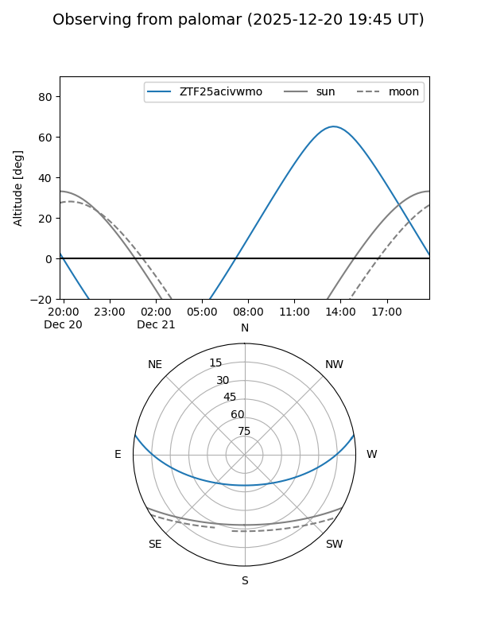

ZTF25acivwmo
Target ZTF25acivwmo at 2025-12-18 14:02
Aliases and brokers:
FINK: fink-portal.org/ZTF25acivwmo
Lasair: lasair-ztf.lsst.ac.uk/objects/ZTF25acivwmo
ALeRCE: alerce.online/object/ZTF25acivwmo
alt names
ZTF25acivwmo (ztf,fink_ztf)
Coordinates:
equatorial (ra, dec) = 176.4061,+8.71348
equatorial (HMS+DMS) = 11:45:37.47,+08:42:48.51
galactic (l, b) = (259.6651,+65.89111)
Photometry
last ztfg=19.03
1 ztfg detections
Lightcurve

Visibility


Additional plots